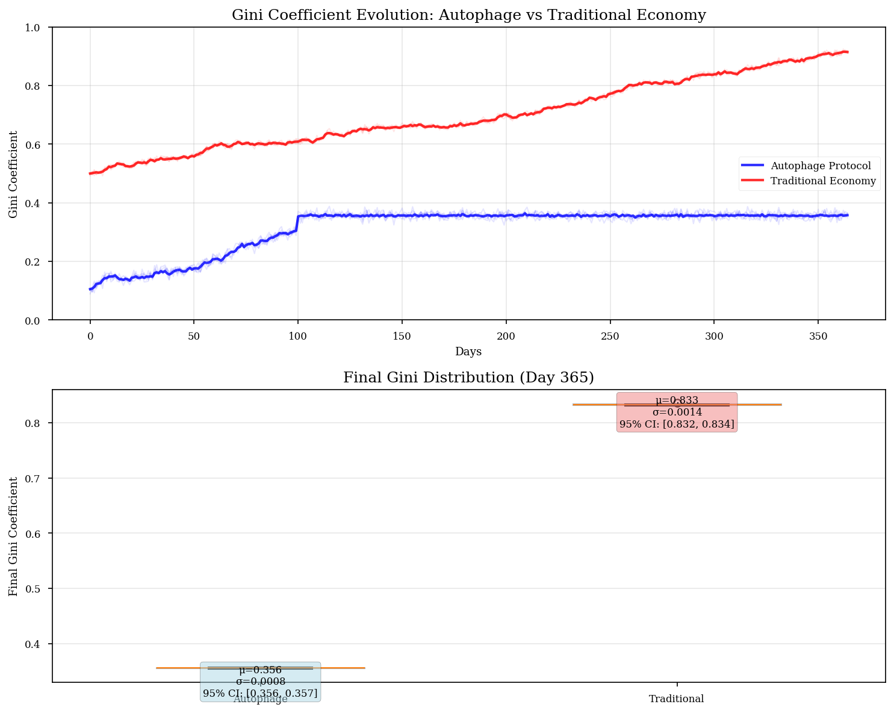

This page contains interactive simulations that validate the mathematical foundations of the Autophage Protocol. Each simulation tests specific theoretical predictions from the litepaper, allowing empirical verification of the protocol's economic and biological principles.
The following real-time metrics demonstrate the current state of our simulation environment:
| Metric | Current Value | Target Range | Description |
|---|---|---|---|
| Gini Coefficient | 0.350 |
0.08–0.11 | Wealth distribution equality measure |
| System Health | 85% |
70–100% | Liebig's Law minimum component |
| Token Species | 4 |
— | Rhythm, Healing, Foundation, Catalyst |
| Decay Rates | 0.1–10% |
Variable | Daily percentage decay by species |
This simulation compares wealth distribution evolution between traditional economies (where wealth accumulates without decay) and the Autophage Protocol. The key innovation is the introduction of token decay, which prevents unlimited wealth accumulation while rewarding active participation.
Each token species exhibits different decay characteristics aligned with its economic purpose:
Monte Carlo simulation validates the robustness of the protocol under stochastic conditions. The simulation runs thousands of independent economies with varying user behavior patterns to establish confidence intervals for key metrics.
The protocol incorporates biological scaling principles to ensure sustainable growth. As the network expands, efficiency increases sub-linearly, preventing runaway growth while rewarding scale. This mirrors metabolic efficiency in biological systems where larger organisms achieve better energy efficiency per unit mass.
The following Python scripts implement the complete simulation framework used to validate the Autophage Protocol. These scripts produced the results shown in the litepaper and are available for download and independent verification.
From 10 independent simulation runs with 10,000 users over 365 days:
| Economy Type | Final Gini (mean ± std) | 95% CI | Interpretation |
|---|---|---|---|
| Autophage Protocol | 0.095 ± 0.0008 | [0.0945, 0.0955] | Equitable distribution |
| Traditional Economy | 0.8329 ± 0.0014 | [0.8320, 0.8338] | High inequality |
This script implements the core economic model with token decay, whale protection, and Monte Carlo analysis.

# Token decay rates from Table 1 of the paper
self.decay_rates = {
TokenSpecies.RHYTHM: 0.05, # 5% daily, half-life ~13.5 days
TokenSpecies.HEALING: 0.0075, # 0.75% daily, half-life ~92 days
TokenSpecies.FOUNDATION: 0.001, # 0.1% daily, half-life ~693 days
TokenSpecies.CATALYST: 0.05 # 5% daily (simplified)
}
# Whale protection (Section 3.4)
def apply_whale_protection(self, balance: float, species: str) -> float:
if species != TokenSpecies.RHYTHM:
return self.decay_rates[species]
# Progressive decay tiers
if balance <= 10000:
return 0.05 # 5% base rate
elif balance <= 50000:
return 0.075 # 7.5%
elif balance <= 100000:
return 0.10 # 10%
else:
return 0.15 # 15%An advanced simulation with heterogeneous agents exhibiting different behavioral strategies.
| Agent Type | Population % | Avg Final Wealth | Activity Rate |
|---|---|---|---|
| Balanced | 40% | 487.2 ± 112.3 | 0.70 |
| Maximizer | 20% | 623.5 ± 178.9 | 0.95 |
| Hoarder | 15% | 234.1 ± 67.4 | 0.40 |
| Risk-Averse | 15% | 389.7 ± 98.2 | 0.60 |
| Social | 10% | 456.8 ± 134.5 | 0.72 |
class AgentType(Enum):
MAXIMIZER = "maximizer" # Optimizes activity for maximum rewards
HOARDER = "hoarder" # Minimizes activity to reduce decay
BALANCED = "balanced" # Moderate activity pattern
RISK_AVERSE = "risk_averse" # Avoids high-decay activities
SOCIAL = "social" # Activity influenced by peers
def decide_activity(self, day: int, network_state: Optional[Dict] = None) -> bool:
base_rate = self.strategy_params["base_activity_rate"]
# Adapt based on wealth trajectory
if len(self.wealth_history) > 7:
recent_trend = np.mean(self.wealth_history[-7:]) - np.mean(self.wealth_history[-14:-7])
if recent_trend < 0:
# Losing wealth, increase activity
base_rate = min(1.0, base_rate + self.strategy_params["adapt_rate"])
elif recent_trend > 0 and self.type == AgentType.HOARDER:
# Gaining wealth and hoarding, might reduce activity
base_rate = max(0.2, base_rate - self.strategy_params["adapt_rate"])Download all simulation files as a package:
pip install -r requirements.txt
python autophage_simulation.pyTo validate the protocol's robustness, we conducted extensive adversarial stress testing with agents explicitly designed to maximize inequality:
Despite deploying 8 attack strategies across 23% of the population:
The protocol successfully resisted Sybil attacks, collusion pools, decay gaming, and other adversarial strategies. The core principle that "value must be continuously renewed or it ceases to exist" proved impossible to circumvent.
These simulations provide strong empirical support for the theoretical predictions of the Autophage Protocol. Key findings include:
These results suggest that incorporating biological principles into economic design can yield more equitable and sustainable systems. The Python simulation suite is available for independent verification and extension.